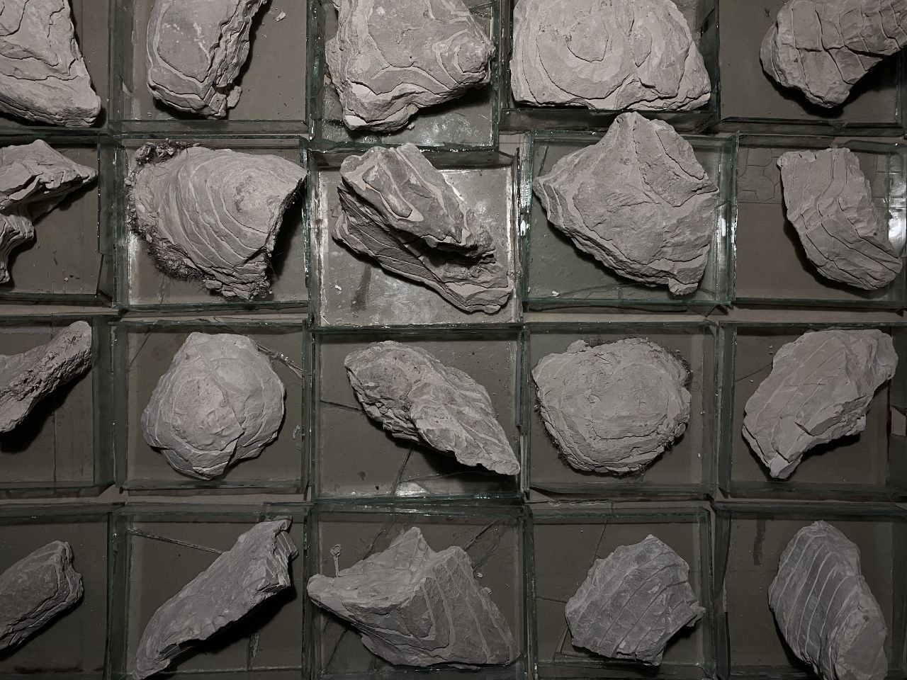
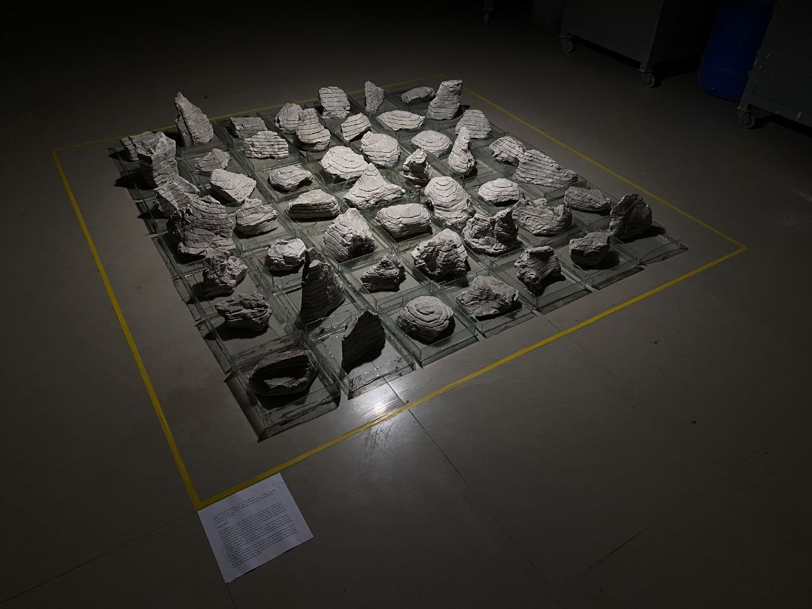
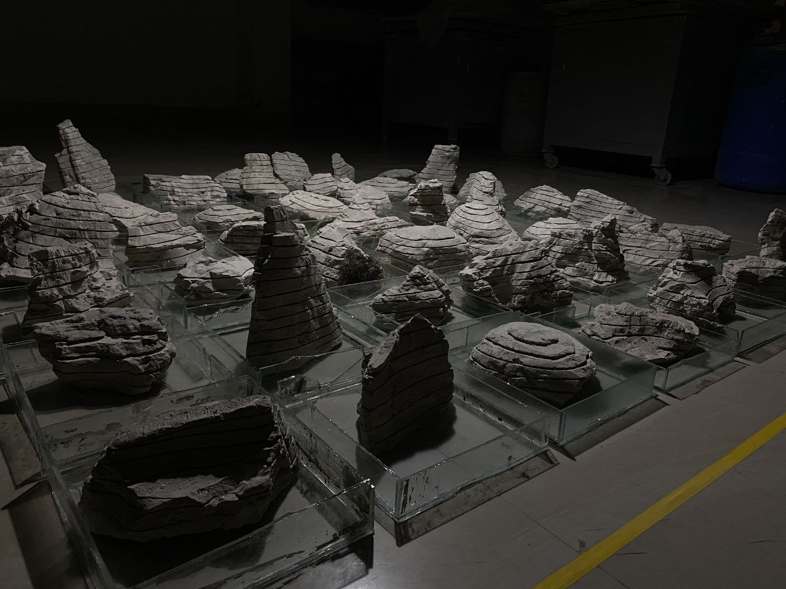
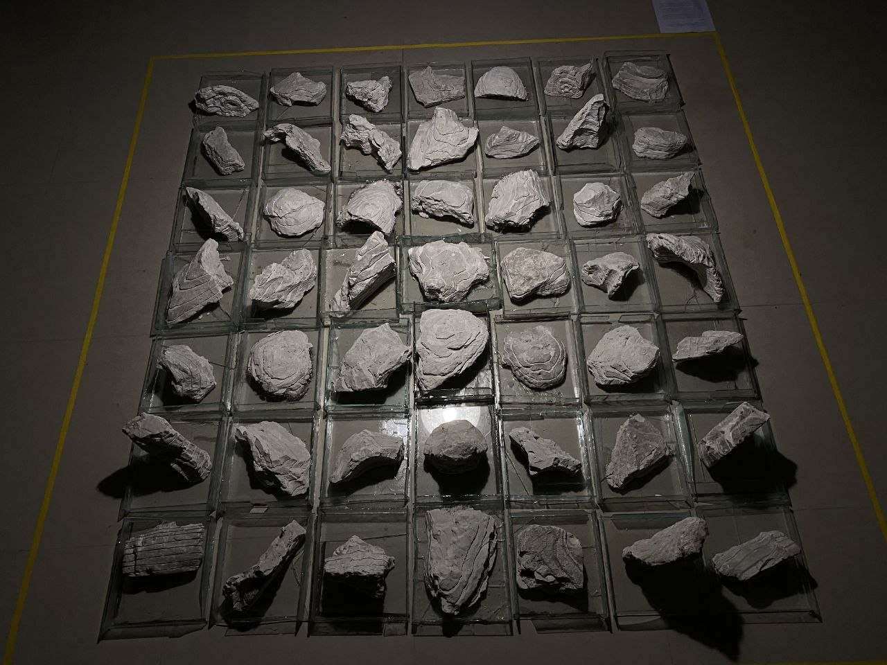
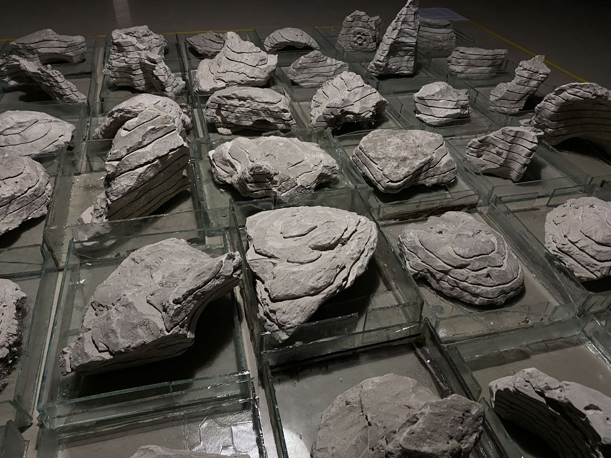
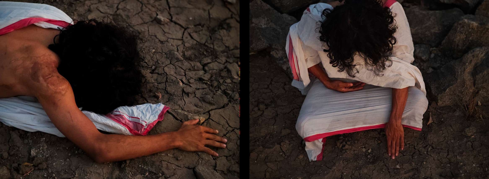
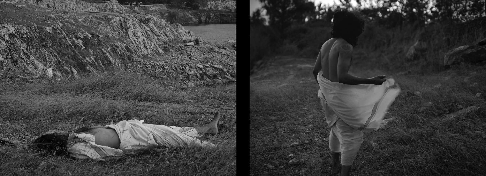
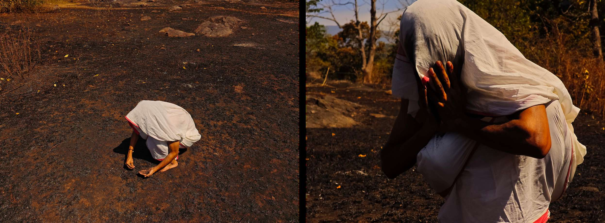
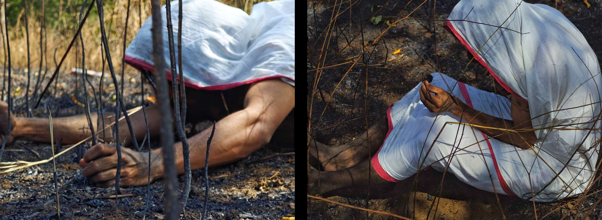
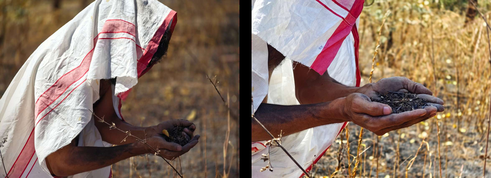

Concept Note:
This installation is a forensic autopsy of urbanisation, constructed entirely from the discarded casualties of the metropolis. The topographical strata are carved directly into exhausted Plaster of Paris moulds- the discarded, mined earth of the art institution itself. By utilising this specific institutional waste, the work exposes the hypocrisy of an environment that relies on endless extraction and disposal, reducing the earth to a lifeless, mass-produced byproduct.
These carved ruins are trapped within fragmented containers built from scavenged, shattered street glass- the transparent, hyper-capitalist skin of the city. The installation captures a violent physical negotiation: the jagged, exhausted earth (the plaster) is forced to comply with the rigid, hostile architecture of the urban grid (the glass containers).
By locking this collision of waste into a strict mathematical survey under a clinical spotlight and barricading it with industrial tape, the installation operates as a restricted zone. It strips the room of gallery aesthetics, forcing the viewer to confront the landscape not as a living habitat, but as a colonised, exhausted, and meticulously catalogued inventory of urban debris.





Concept: This series documents the violent physical transaction between rural extraction and urban expansion. Executed in the charred, hollowed-out void of the Dhoni quarry in Palakkad, the work abandons romantic or sentimental notions of the landscape. Instead, it confronts the earth as an active site of structural erasure. The rock and topsoil missing from this crater are the exact raw materials consumed to construct the hostile, concrete architecture of the metropolis.
By placing the living body into this sterilized, burnt void, the performance captures the friction of forced endurance. The body is forced to negotiate with a landscape that has been violently processed into industrial material. The series does not mourn a lost history; it serves as forensic documentation of a space that has been structurally silenced and physically consumed by the urban machine.




Concept: Following the documentation of the excavated quarry, this second intervention shifts to a site of rapid spatial clearance: the burnt forests of Dhoni. Here, the Buddhist concept of the Adittapariyaya Sutta (The Fire Sermon) is stripped of its metaphor and confronted as a literal mechanism of environmental erasure. Fire is utilized as an aggressive tool of encroachment, reducing a complex ecosystem to a graveyard of carbon.
Historically, ascetic practices placed the body in charnel grounds to observe biological decay. This performance recontextualizes that endurance for the modern crisis. The charred forest serves as the contemporary charnel ground. By positioning the living body amidst the blackened stumps and ash, the work is not an act of passive spiritual meditation, but a forced physical negotiation with the toxic residue of a destroyed environment.
The images document the exact physical friction of survival in a hostile zone. The body attempts to occupy a space that has been structurally asphyxiated, transforming the act of endurance into forensic evidence of material violence.


